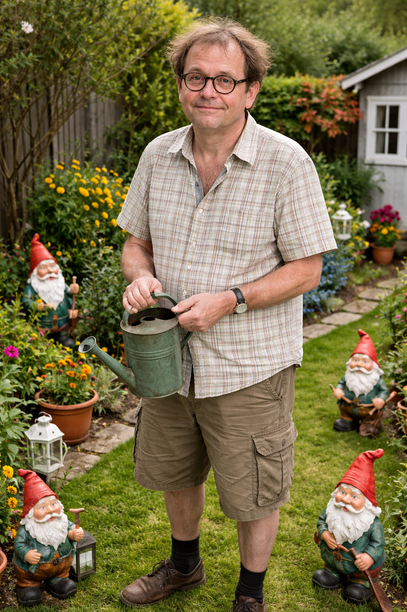

Grundlagen & richtige Düngung

Pflanzenkunde (Botanik) beschäftigt sich mit Aufbau, Wachstum und Pflege von Pflanzen. Im Kleingarten ist dieses Wissen entscheidend, um gesunde Pflanzen und gute Erträge zu erzielen.
Pflanzen benötigen Nährstoffe wie Stickstoff (N), Phosphor (P) und Kalium (K). Im Gartenboden sind diese oft nicht in ausreichender Menge vorhanden, daher wird gedüngt.
Eine Überdüngung kann Pflanzen schädigen und die Umwelt belasten. Daher gilt:
Nachhaltige Düngemethoden gewinnen immer mehr an Bedeutung: